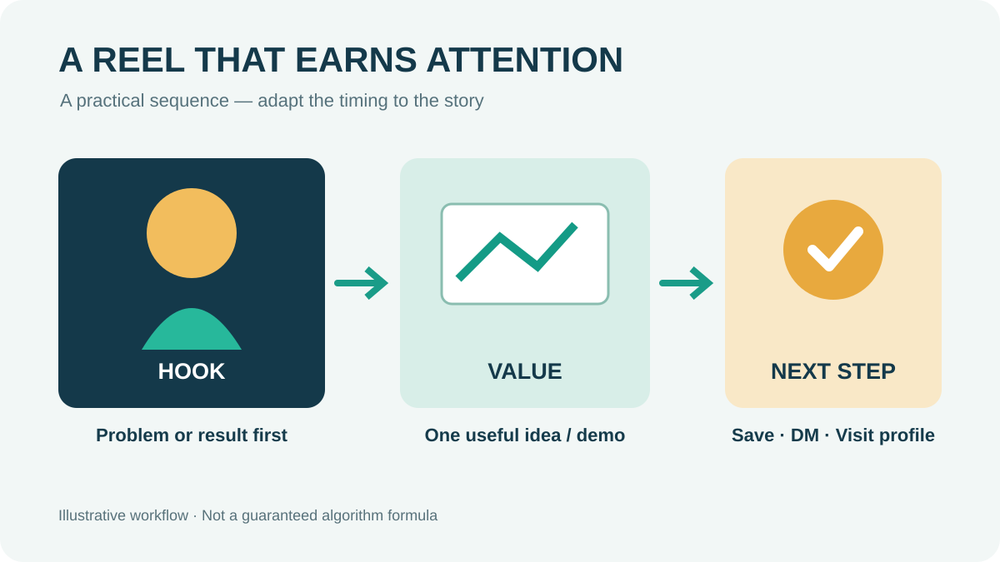
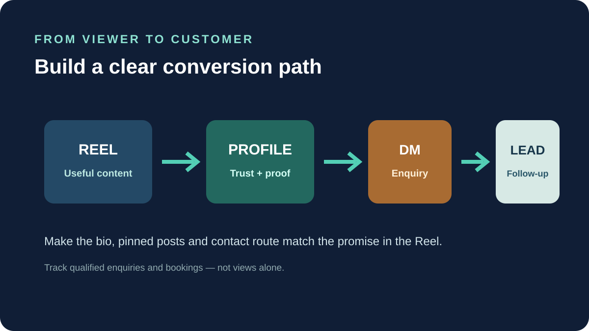

1. Create a strong opening hook
The first seconds should tell viewers why the Reel is relevant. Avoid long greetings, logos that fill the opening, or an unexplained establishing shot. Start with the customer problem, the finished result, a surprising detail or a direct audience callout. A three-second hook is a useful creative target to test—not a guaranteed algorithm rule.
Hook formulas for businesses and creators
- Problem first: “Your indoor videos look grainy even on a good phone? Check these three settings.”
- Result or demonstration: Show the finished product, makeover or edited video first, then explain how it was made.
- Audience callout: “If you run a coaching institute or local clinic, this is one content mistake to avoid.”
- Myth-busting: “You do not always need an expensive camera to record a clean Reel. Start with light and audio.”
- Quick comparison: Show “before” and “after” side by side, and explain the real changes.
Combine a visual cue—such as a close-up, movement, reveal or framing change—with a concise on-screen line and a spoken opening where appropriate. Remove dead air, but do not use movement or effects that distract from the message.
2. Shoot clean vertical footage
Professional-looking content starts with clear framing, stable exposure and intelligible audio—not necessarily an expensive camera. Record for the platform and keep the most important information visible around Instagram's interface.
- Frame vertically: Use a 9:16 canvas. A common full-HD export is 1080 × 1920 pixels. Compose vertically during the shoot instead of relying on a tight crop from horizontal footage.
- Leave interface space: Keep titles, faces, product labels and calls to action away from the top and bottom overlays and the right-side action icons. Preview the final export inside Instagram before publishing.
- Prioritize voice clarity: Record in a quiet room, move closer to the phone or use a suitable external microphone. Monitor for clipping, echo and background noise.
- Use soft, directional light: Face a window or use a diffused key light at an angle. Avoid strong backlight unless it is intentional.
- Capture supporting footage: Record close-ups, hands at work, location details, product demonstrations, classroom activity or behind-the-scenes shots that help explain the story.
If you are repurposing a podcast or YouTube video, select a self-contained moment, reframe it vertically, add context for viewers who have not watched the full episode, and check that the crop does not cut off faces or important screen details.
3. Edit for clarity, rhythm and retention
Editing should make the message easier to follow. Fast cuts are not automatically better: use a cut when it removes a pause, changes the visual evidence or moves the story forward.
- Remove unnecessary pauses: Trim long gaps, repeated phrases and avoidable filler while keeping speech natural.
- Use B-roll with a purpose: Alternate between presenter footage, product details, process shots, screen recordings and relevant cutaways when they add information.
- Vary visuals when the story needs it: A framing change every few seconds can help reset attention, but do not force a zoom or transition on a fixed timer.
- Add accurate captions: Use readable, high-contrast subtitles. Proofread names, technical terms, Marathi/Hindi words and local place names.
- Balance sound: Keep dialogue intelligible above music and effects. There is no universal music dB setting because source levels, microphones and mixes differ; check the result on phone speakers and headphones.
- Export cleanly: Avoid unnecessary re-exports, visible editing-app watermarks, borders and blurry footage.

Choose length to fit the idea
A quick reveal may work in 10–20 seconds; a tutorial or case study may need 30–90 seconds or longer. Treat these as production examples, not fixed performance benchmarks. Keep only the time needed to make the point clear, and check your account's current Instagram feature limits and recommendation guidance.
4. Write useful captions and choose audio thoughtfully
The caption should add context rather than repeat every spoken line. Put the topic or benefit early, add a short explanation, and invite a relevant response. Use plain language your intended audience would naturally search for.
- Lead with the subject: “Planning a coaching institute admission Reel? Use this three-shot structure…”
- Add practical detail: Mention the steps, service area, product feature or preparation checklist viewers may want to save.
- Use one natural CTA: Ask a useful question, invite a relevant DM or direct viewers to a profile link where appropriate.
- Use relevant keywords: Include the service, topic and location naturally in spoken words, on-screen text and caption where they fit.
- Use a small set of relevant hashtags: Choose tags that accurately describe the subject and audience. A few specific tags are a sensible starting point; no hashtag count guarantees reach.
- Choose audio for fit and rights: Original voice, suitable licensed tracks or Instagram's available audio options can support the story. Music should not overpower speech, and commercial accounts should check music-use permissions.
Examples might include #AmravatiBusiness, #VideoProductionIndia or #InstagramMarketing only when they genuinely match the Reel. Avoid unrelated trending tags, repetitive blocks and claims that hashtags alone will make a video viral.
5. Turn profile visits into genuine enquiries
Views are an awareness metric. A business outcome happens when the right viewer understands the offer, trusts the account and can take the next step without confusion. Make the Reel, profile and contact process tell the same story.
| Goal | Example call to action | What to prepare |
|---|---|---|
| Encourage saves | “Save this checklist before your next shoot.” | A genuinely useful checklist or reference |
| Start a conversation | “DM us ‘SETUP’ and tell us what you are planning.” | A clear, helpful reply process; do not promise an automatic resource unless it exists |
| Drive website visits | “Explore the full guide through the link in our bio.” | A working, mobile-friendly landing page |
| Generate project enquiries | “Planning a brand shoot or podcast? Send your brief by DM or use our contact page.” | Service details, location, response time and project brief |
Optimize your Instagram profile
- Say who you help and what you provide in the name and bio fields.
- Include your service area where local discovery matters, for example Amravati and nearby areas.
- Use one working website or contact route and test it on mobile.
- Pin a small set of posts that explain your services, show real work and answer common questions.
- Use Highlights for portfolio, process, FAQs, testimonials with permission and contact details.
- Reply to genuine questions clearly and avoid collecting more personal information than needed.

6. Build a realistic content rhythm
Consistency means choosing a pace you can maintain while keeping the content useful. Three or four Reels a week can be a starting experiment for a team with enough ideas and production time; one or two well-planned Reels may be more realistic for a solo business. Use Instagram's Professional Dashboard and your own results to adjust the schedule.
A simple weekly content mix
- Teach: answer one frequently asked customer question.
- Demonstrate: show a product feature, editing step, classroom technique or service process.
- Build trust: share a behind-the-scenes moment, team introduction or approved customer story.
- Invite action: explain a service, event, booking process or next step without making unsupported claims.
For a clinic, this could mean a general educational explanation, a facility/process tour and a clear appointment-information Reel—while respecting patient privacy and applicable advertising rules. For a coaching institute, it could be a concept explainer, a classroom activity and an admissions FAQ. For a creator, it could be a workflow tip, a before-and-after edit and a gear explanation.
7. Measure results and improve the next Reel
Do not judge the whole strategy from one upload or the first hour. Review performance over a consistent period and compare similar formats, topics and audiences. Instagram's Professional Dashboard includes a Best Practices area with personalized guidance across creation, engagement, reach, monetization and guidelines.
- Attention: views, reach and average watch time where available.
- Engagement quality: shares, saves, meaningful comments and replies.
- Profile intent: profile visits, follows and link taps attributable to the content where insights provide them.
- Business outcome: qualified DMs, calls, form submissions, bookings and sales. Record the source so you can understand which content brings relevant enquiries.
After each review, write down one thing to keep and one thing to test—such as a clearer first frame, more specific audience callout, improved audio or a more relevant CTA. Change one major variable at a time where practical so the lesson is easier to interpret.
Official reference: Instagram Best Practices in the Professional Dashboard.
Frequently asked questions
How often should a business post Instagram Reels?
There is no single posting frequency that fits every account. Choose a sustainable schedule, publish consistently enough to learn from the results, and prioritize useful original content over daily posts made in a rush. Use your Professional Dashboard and production capacity to adjust.
Should I delete a Reel if it gets low views in the first hour?
Not automatically. Early performance is not a complete measure of the content's value. Check the topic, opening, audience response and insights over a reasonable period before deciding whether to keep, revise or reuse the idea.
Can I repurpose YouTube or podcast clips into Reels?
Yes, when you own or have permission to use the footage and audio. Select a self-contained moment, crop it thoughtfully to vertical, add context and accurate captions, and make sure the result offers value on its own. Avoid reposting someone else's content with only a watermark or superficial edits.
Do hashtags guarantee more reach?
No. Relevant hashtags can help describe the topic, but they do not guarantee distribution. Clear content, audience fit, viewer response and recommendation eligibility also matter.
Ready to improve your short-form video workflow?
Strong Reels combine a relevant opening, clean production, purposeful editing and a useful next step. Build around real customer questions, publish at a sustainable pace and learn from both audience response and qualified enquiries.
Creator Support Amravati helps businesses, educators and creators with short-form scripting, on-location and studio shoots, vertical editing and social media content workflows. Explore our Social Media Creative, Video & Photo Production and Video Editing services, or contact our team to plan your next campaign.
Continue learning: Professional Video Podcast Studio Setup Guide and YouTube Channel Launch Roadmap.